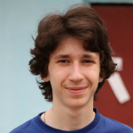

|  |
Vitaly AksenovPost-doc [cv] [github]Affiliations: ITMO University and IST Austria Former Affiliations: PhD Position, INRIA Paris Phone: +7-951-662-33-99 E-mail: aksenov [@] itmo [.] ru Research interests: Parallel algorithms, Concurrent data structures, Graph algorithms, Bioinformatics and Combinatorics |
2019 |
|
|
S. Aganezov, I. Zban, V. Aksenov, N. Alexeev, M. C. Schatz.
Recovering Rearranged Cancer Chromosomes from Karyotype Graphs. RECOMB-CG 2019.
[pdf] U. Acar, V. Aksenov, A. Chargueraud, M. Rainey. Provably and Practically Efficient Granularity Control. PPoPP 2019. [pdf] |
|
2018 |
|
|
V. Aksenov, P. Kuznetsov, A. Shalyto. Parallel Combining: Benefits of Explicit Synchronization OPODIS 2018.
[pdf] [slides] V. Aksenov, D. Alistarh, P. Kuznetsov. Brief-Announcement: Performance Prediction for Coarse-Grained Locking. PODC 2018. [pdf] [slides] V. Aksenov, P. Kuznetsov, A. Shalyto. On Helping and Stacks. NETYS 2018. [pdf] [slides] U. Acar, V. Aksenov, A. Chargueraud, M. Rainey. Performance Challenges in Modular Parallel Programs (Poster). PPoPP 2018. [pdf] [poster] |
|
2017 |
|
|
V. Aksenov, V. Gramoli, P. Kuznetsov, A. Malova, S. Ravi. A Concurrency-Optimal Binary Search Tree. Euro-Par 2017.
[pdf] [slides] U. Acar, V. Aksenov, S. Westrick. Brief-Announcement: Parallel Dynamic Tree Contraction via Self-Adjusting Computation. SPAA 2017. [pdf] [full] |
|
2016 |
|
| V. Aksenov, K. Kokhas. Calculation of Pfaffians by a Chip Removal. Journal of Mathematical Sciences, 2016. [pdf] | |
2015 |
|
| V. Aksenov, K. Kokhas. Chip removal. Urban Renewal Revisited. Journal of Mathematical Sciences, 2015. [pdf] | |
2014 |
|
| V. Aksenov, K. Kokhas. Domino Tilings and Determinants. Journal of Mathematical Sciences, 2014. [pdf] |
2017 |
|
| Long session during autumn in Paris. http://neerc.ifmo.ru/trains/paris 1-week session in ETH Zurich. http://neerc.ifmo.ru/trains/zurich |
|
2016 |
|
| 1-week session in Toulouse. http://neerc.ifmo.ru/trains/toulouse/2016 | |
2015 |
|
| 1-week session in Lyon. http://perso.ens-lyon.fr/eric.thierry/WCPS2015 | |
2014 |
|
| 1-week session in Harbin. http://neerc.ifmo.ru/trains/harbin |
12.10.2018 |
Functions | Problems Solutions |
19.07.2018 |
Integral Inequalities | Problems Solutions |
14.07.2017 |
Number theory and inequalities | Problems [rus] Solutions [rus] |
04.07.2016 |
Number theory | Problems [rus] Solutions [rus] |
2019 |
||
| Program Committee of Hydra 2019 (An Industrial Distributed Computing Confrerence, http://hydraconf.com) | ||
| Program Committee of The Second Summer School on Practice and Theory of Distributed Computing (http://sptdc.ru) | ||
2017 |
||
| Co-organizer of The First Summer School on Practice and Theory of Concurrent Computing (http://neerc.ifmo.ru/sptcc) | ||
2017-... |
||
| Co-head of Jury of The Bioinformatics Contest (http://bioinf.me/contest) | ||
2016 |
||
| Host Scientific Committee of IOI in Kazan | ||
2012-... |
||
| Jury of NERC, qualification for ICPC World Finals (http://neerc.ifmo.ru) |